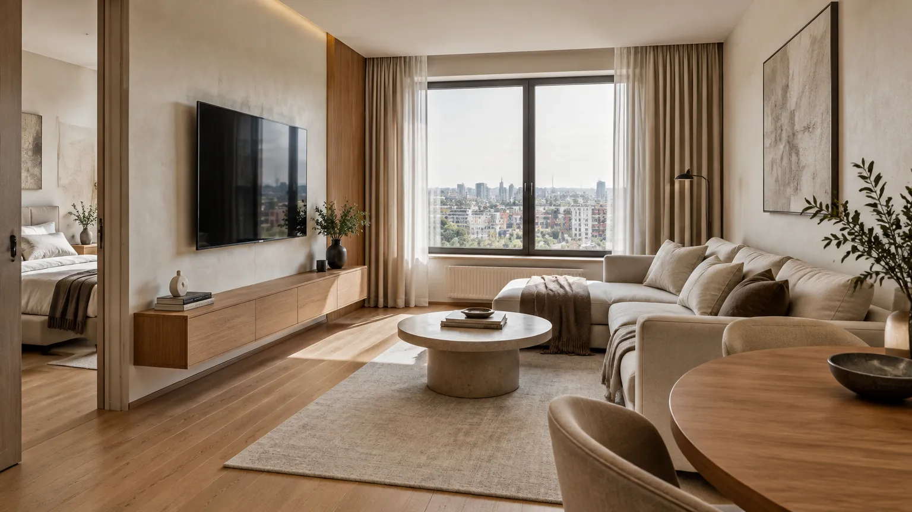

Ремонт квартир под ключ в Ростове-на-Дону
Черновая и чистовая отделка, перепланировка, капитальный ремонт и санузлы. Цена и сроки записаны в договоре, деньги вы платите за принятые этапы.

Что входит и сколько стоит
Цены указаны за квадратный метр фактической площади пола, ставка «от». Итог зависит от состояния стен и перекрытий и от выбранных чистовых материалов.
Черновая отделка новостроек
от 6 000 ₽/м²Штукатурим стены по маякам, заливаем полусухую стяжку, прокладываем электропроводку и трубы водоснабжения.
Чистовая отделка помещений
от 8 000 ₽/м²Клеим обои, красим стены, укладываем ламинат или кварцвинил, монтируем плинтусы, розетки и межкомнатные двери.
Перепланировка и объединение комнат
от 10 000 ₽/м²Сносим ненужные перегородки, усиливаем проёмы металлоконструкциями, возводим стены из блоков, готовим поверхности под отделку.
Капитальный ремонт квартир под ключ
от 12 000 ₽/м²Демонтируем старые перегородки, меняем коммуникации, выравниваем плоскости и делаем финишную отделку.
Санузлы под ключ
от 18 000 ₽/м²Гидроизоляция, замена стояков, разводка труб, керамогранит с запилом углов под 45 градусов, сантехника.
Как проходит ремонт
Замер и смета
Инженер замеряет объект, считает смету и записывает цену и сроки в договор. Выезд замерщика бесплатный и ни к чему не обязывает.
Основа под чистовую
Штукатурка стен по маякам, полусухая стяжка, электропроводка и водоснабжение. Вы проверяете этап и подписываете акт.
Фото и видео до стяжки
Скрытые узлы снимаем на фото и видео и присылаем в мессенджер до заливки стяжки. Прораб на объекте каждый рабочий день.
Покрытия и двери
Плитка, ламинат или кварцвинил, покраска, плинтусы, розетки, двери. Каждый этап снова принимаете вы.
Сдача
Вывозим мусор, моем окна и полы. Если сдача затянулась по нашей вине, неустойка вычитается из последнего платежа.
Что мы берём на себя
3D-проект до закупки
Визуализация комнат показывает расстановку мебели, розеток и раскладку плитки, поэтому переделок во время ремонта не бывает.
Материалы со скидкой до 20%
Покупаем смеси, кабель, трубы и плитку у оптовых поставщиков, сами доставляем, разгружаем и поднимаем на этаж.
Прораб каждый день
Проверяет геометрию стен по чек-листам и присылает в мессенджер фото и видео скрытых узлов до заливки стяжки.
Уборка и сдача
Собираем остатки, заказываем контейнер, вывозим мусор, отмываем окна, плитку и полы перед передачей ключей.
Примеры объектов
- Трёхкомнатная квартира в новостройке, 86 м²: капитальный ремонт по дизайн-проекту, 75 дней под ключ.
- Евро-двушка, 52 м²: перепланировка с объединением кухни и гостиной, 50 дней.
- Совмещённый санузел, 6,2 м²: замена чугунных стояков на пластиковые, керамогранит 120×60, 21 день работ.
- Детская, 14 м²: ровные полы под ламинат, встроенный шкаф до потолка, 18 дней отделки.
Объекты и сроки указаны так, как они показаны на главной странице сайта. Ваш срок мы называем после замера и записываем в договор.
Условия работы
Цена не растёт
Цена и сроки записываются в договор. Если инженер ошибся в расчётах, недостающие черновые материалы и работы мы берём на себя.
Платите за принятое
Вы проверяете завершённый этап (стяжку, проводку, плитку), подписываете акт и только после этого оплачиваете его.
Неустойка за просрочку
За каждый день задержки по нашей вине действует неустойка по договору, её сумма вычитается из финального платежа.
Гарантия 3 года
На работы, по договору. Фотоотчёт присылаем каждый день, скрытые узлы показываем на фото и видео до заливки стяжки.
Частые вопросы
Сколько стоит выезд замерщика?
Ничего. Выезд замерщика и смета бесплатные, вы не обязаны заключать договор.
Что, если смета вырастет во время ремонта?
Цена фиксируется в договоре и после подписания не растёт. Если инженер ошибся в расчётах, недостающие черновые материалы и работы мы берём на себя.
Можно узнать цену без визита?
Да. Пришлите площадь и тип ремонта в Макс или ВКонтакте, мы назовём ориентир. Точную смету инженер делает на замере, потому что цена зависит от состояния стен и перекрытий.
Как устроена оплата?
По этапам. Вы принимаете завершённый этап (стяжку, проводку, плитку), подписываете акт и после этого оплачиваете его. За невыполненное платить не нужно.
Как я пойму, что происходит на объекте?
Каждый день присылаем в мессенджер фотоотчёт, а скрытые узлы показываем на фото и видео до заливки стяжки. Прораб на объекте каждый рабочий день.
Назовём цену в договоре
Оставьте телефон или ник в мессенджере, договоримся о времени бесплатного замера. Работаем в Ростове-на-Дону и области каждый день с 9:00 до 20:00.